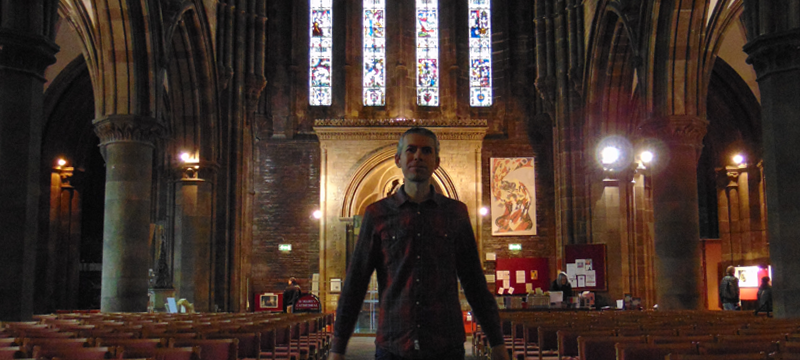

While studying at Edinburgh College of Art, I successfully completed a B.A. Honours degree in Sculpture in 2015. This Course gave me the opportunity to liberate personal ideas to what art could be. My art practice incorporated drawing, painting, video, photography and performance art.
In my final year performance art featured prominently. Audience participated performances drew on spiritual practices which were experienced at a holistic retreat in the Trossachs. Intuitively, each discipline helped to support and inform the other as artistic ideas were continually developed.